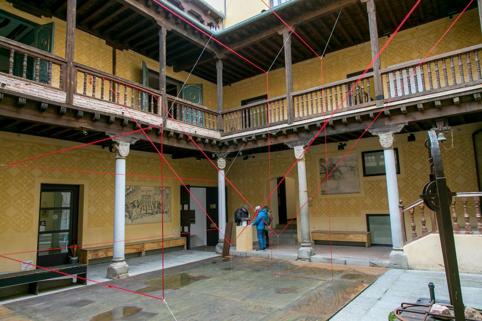

Un centro de arte contemporáneo de Segovia denuncia que el PP y Vox quieren cambiarlo por uno de cultura tradicional

La Junta de Castilla y León y la Diputación no aclaran el futuro del espacio, que programa exposiciones, talleres, ciclos de cine y charlas desde hace 15 años
Una reflexión artística sobre cómo construimos los relatos que dan forma a nuestra percepción del mundo. Una instalación sobre el espacio como elemento esencial de la creación. Un ciclo de películas del cineasta aregentino Ricardo Preve, talleres de caligrafía y de fotografía, charlas. Son algunas de las actividades programadas estos días en el palacio Quintanar de Segovia , pulmón de cultura contemporánea de la ciudad desde hace 15 años. Hasta que dentro de unos días este espacio gestionado por la Junta de Castilla y León (PP y Vox) se convierta en el Instituto de Cultura Tradicional y sede de las oficinas del área de Cultura y Turismo de la Diputación de Segovia (PP), denuncian los…